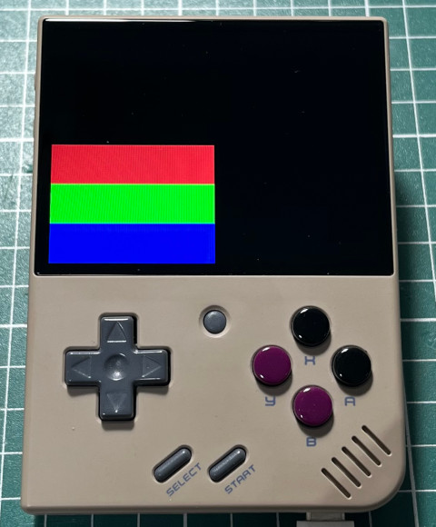

Steward
分享是一種喜悅、更是一種幸福
掌機 - Miyoo Mini Plus - C/C++ - SDL v2.0 - OpenGL ES 2.0 - Use Texture
main.c
#include <stdio.h>
#include <stdlib.h>
#include <GLES2/gl2.h>
#include <SDL2/SDL.h>
const char *vShaderSrc =
"attribute vec4 a_position; \n"
"attribute vec2 a_texCoord; \n"
"varying vec2 v_texCoord; \n"
"void main() \n"
"{ \n"
" gl_Position = a_position; \n"
" v_texCoord = a_texCoord; \n"
"} \n";
const char *fShaderSrc =
"#ifdef GL_ES \n"
"precision mediump float; \n"
"#endif \n"
"varying vec2 v_texCoord; \n"
"uniform sampler2D s_texture; \n"
"void main() \n"
"{ \n"
" gl_FragColor = texture2D(s_texture, v_texCoord); \n"
"} \n";
int main(int argc, char **argv)
{
int w = 320;
int h = 240;
SDL_Window *window = NULL;
SDL_GLContext context = {0};
SDL_Init(SDL_INIT_VIDEO);
SDL_GL_SetAttribute(SDL_GL_CONTEXT_PROFILE_MASK, SDL_GL_CONTEXT_PROFILE_ES);
SDL_GL_SetAttribute(SDL_GL_CONTEXT_MAJOR_VERSION, 2);
SDL_GL_SetAttribute(SDL_GL_CONTEXT_MINOR_VERSION, 0);
window = SDL_CreateWindow("main", 0, 0, w, h, SDL_WINDOW_OPENGL);
context = SDL_GL_CreateContext(window);
GLuint vShader = 0;
GLuint fShader = 0;
GLuint pObject = 0;
vShader = glCreateShader(GL_VERTEX_SHADER);
glShaderSource(vShader, 1, &vShaderSrc, NULL);
glCompileShader(vShader);
fShader = glCreateShader(GL_FRAGMENT_SHADER);
glShaderSource(fShader, 1, &fShaderSrc, NULL);
glCompileShader(fShader);
pObject = glCreateProgram();
glAttachShader(pObject, vShader);
glAttachShader(pObject, fShader);
glLinkProgram(pObject);
glUseProgram(pObject);
GLint positionLoc = glGetAttribLocation(pObject, "a_position");
GLint texCoordLoc = glGetAttribLocation(pObject, "a_texCoord");
GLint samplerLoc = glGetUniformLocation(pObject, "s_texture");
GLuint textureId = 0;
GLubyte pixels[320 * 240 * 3] = {0};
int x = 0, y = 0;
for (y = 0; y < 240; y++) {
for (x = 0; x < 320; x++) {
switch (y / 80) {
case 0:
pixels[(y * 320 * 3) + (x * 3) + 0] = 0xff;
pixels[(y * 320 * 3) + (x * 3) + 1] = 0x00;
pixels[(y * 320 * 3) + (x * 3) + 2] = 0x00;
break;
case 1:
pixels[(y * 320 * 3) + (x * 3) + 0] = 0x00;
pixels[(y * 320 * 3) + (x * 3) + 1] = 0xff;
pixels[(y * 320 * 3) + (x * 3) + 2] = 0x00;
break;
case 2:
pixels[(y * 320 * 3) + (x * 3) + 0] = 0x00;
pixels[(y * 320 * 3) + (x * 3) + 1] = 0x00;
pixels[(y * 320 * 3) + (x * 3) + 2] = 0xff;
break;
}
}
}
glPixelStorei(GL_UNPACK_ALIGNMENT, 1);
glGenTextures(1, &textureId);
glBindTexture(GL_TEXTURE_2D, textureId);
glTexImage2D(GL_TEXTURE_2D, 0, GL_RGB, 320, 240, 0, GL_RGB, GL_UNSIGNED_BYTE, pixels);
glTexParameteri(GL_TEXTURE_2D, GL_TEXTURE_MIN_FILTER, GL_NEAREST);
glTexParameteri(GL_TEXTURE_2D, GL_TEXTURE_MAG_FILTER, GL_NEAREST);
glTexParameteri(GL_TEXTURE_2D, GL_TEXTURE_WRAP_S, GL_CLAMP_TO_EDGE);
glTexParameteri(GL_TEXTURE_2D, GL_TEXTURE_WRAP_T, GL_CLAMP_TO_EDGE);
glClearColor(0.0f, 0.0f, 0.0f, 0.0f);
GLfloat vVertices[] = {
-1.0f, 1.0f, 0.0f, 0.0f, 0.0f,
-1.0f, -1.0f, 0.0f, 0.0f, 1.0f,
1.0f, -1.0f, 0.0f, 1.0f, 1.0f,
1.0f, 1.0f, 0.0f, 1.0f, 0.0f
};
GLushort indices[] = {0, 1, 2, 0, 2, 3};
glViewport(0, 0, w, h);
glClear(GL_COLOR_BUFFER_BIT);
glVertexAttribPointer(positionLoc, 3, GL_FLOAT, GL_FALSE, 5 * sizeof(GLfloat), vVertices);
glVertexAttribPointer(texCoordLoc, 2, GL_FLOAT, GL_FALSE, 5 * sizeof(GLfloat), &vVertices[3]);
glEnableVertexAttribArray(positionLoc);
glEnableVertexAttribArray(texCoordLoc);
glActiveTexture(GL_TEXTURE0);
glBindTexture(GL_TEXTURE_2D, textureId);
glUniform1i(samplerLoc, 0);
glDrawElements(GL_TRIANGLES, 6, GL_UNSIGNED_SHORT, indices);
SDL_GL_SwapWindow(window);
SDL_Delay(30000);
glDeleteShader(vShader);
glDeleteShader(fShader);
SDL_DestroyWindow(window);
SDL_GL_DeleteContext(context);
SDL_Quit();
return 0;
}
編譯、執行
$ /opt/mini/bin/arm-linux-gnueabihf-gcc \
-I/opt/mini/arm-buildroot-linux-gnueabihf/sysroot/usr/include/SDL2 \
-lSDL2 -lSDL2_gfx -lSDL2_image -lSDL2_ttf -lSDL2_mixer -lGLESv2 \
main.c -o main
# kill -STOP `pidof MainUI`
# LD_LIBRARY_PATH=.:/config/lib:/customer/lib ./main
# kill -CONT `pidof MainUI`
